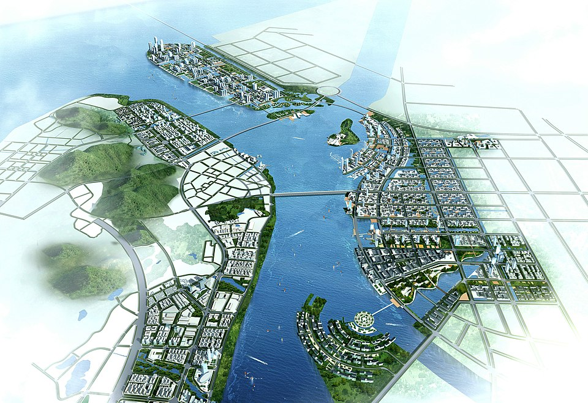

Now that we made it to the second day, we can get started with some some quantum programming and ZX puzzles! You can complete these challenges on your own, or in a team with up to four other students. While working on your own is okay, we do encourage you to work together, since teamwork is an important part of math and science. Once you have formed your team, you can talk to a volunteer and we will set up a dropbox for your team members.
The theme of this competition will be smart city design! In recent years, there has been a lot of hype around using quantum computers to improve smart cities. This competition will have you work through several modules which will introduce you to various ways that quantum computing can fit into the bigger picture of urban planning. Along the way, you will get to apply the knowledge you learned on the first day, while expanding your knowledge through guided activities.
The rest of this day will be broken up into three modules. The first module will show you how quantum computers can be used to solve real-world design problems. The second module will show you how quantum computers can be used to achieve secure communication in a smart city. The third module will have you explore quantum devices, with an emphasis on smart city design. Your goal is to complete one challenge from each module.
About the Image: The image on this page depicts plans for a smart city in the Nansha region of Guangdong province in China. The original image can be found here and is used under the Creative Commons Attribution-Share Alike 3.0 Germany license.